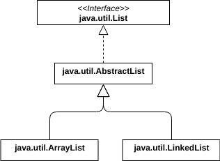

Autres types référence : Arrays, enumerated types (“enums”), annotation types (“annotations”).
Un fichier .java peut contenir :
- un seul type référence déclaré
public ainsi que 0 ou plus types références de visibilité package.
- ou une ou plusieurs types références de visibilité package.
Mais attention lorsqu'on met plusieurs type références dans le même fichier.
Voir exemples/java/packages/danger.
Classes
Syntaxe générale :public abstract class TheClass extends TheSuperClass implements Interface1, Interface2 { ... }
La déclaration d'une classe contient, dans l'ordre :
- Modifiers (abstract, public, final) - mais pas private ou protected
- Le nom de la classe
- Eventuellement
extendsle nom de la classe parent - Eventuellement
implementssuivi du nom de(s) interface(s) implémentée(s) - Le corps de la classe, encadré par
{ ... }
public class Circle {
public static final double PI= 3.14159;
public static double radiansToDegrees(double radians) { return radians * 180 / PI; }
private double r;
public Circle() { this(1.0); }
public Circle(double r) { this.r = r; }
public double getRadius() { return r; }
public void setRadius(double r) {
if (r < 0.0){
throw new IllegalArgumentException("radius may not be negative.");
}
this.r = r;
}
public double area() { return PI * r * r; }
public double circumference() { return 2 * PI * r; }
}
(code dans Circle.java)
Visibilité des classes
- public : classe accessible partout
- Non spécifié (package) : la classe ne sera accessible qu'aux classes du même package.
-
private et protected : ne sont pas des mots-clés permettant d'exprimer la visibilité d'une classe.
Mais on peut écrire ce genre de code :public class Main1{ private class MyClass1{ ... } protected class MyClass2{ ... } }(code dans Main1.java)
Ici on spécifie la visibilité d'un membre de la classeMain1(qui se trouve être une classe).
Membres d'une classe
Une classe peut avoir comme membres des variables, des méthodes ou des classes (voir classes internes plus loin).Les membres peuvent être de classe (static) ou d'instance.
Visibilité des membres
| public | protected | default | private | |
|---|---|---|---|---|
| Classe où le membre est défini | Oui | Oui | Oui | Oui |
| Classe dans le même package | Oui | Oui | Oui | Non |
| Sous-classe dans un package différent | Oui | Oui | Non | Non |
| Non sous-classe dans un package différent | Oui | Non | Non | Non |
public et protected font partie de l'API publique de la classe (puisque protected peut être utilisé dans un autre package).
Mais pas les visibilités
default et private.
Donc bien noter que la visibilité
default est plus restrictive que protected.
Variables de classe ou d'instance
La syntaxe pour déclarer ou initialiser une variable de classe ou d'instance est similaire aux variables locales (à l'intérieur d'une méthode).
class Exemples{
public static final int DAYS_PER_WEEK = 7;
protected String[] daynames = new String[DAYS_PER_WEEK];
private String name;
int x = 1;
public int a = 17, b = 37, c = 53;
private static int nbInstances = 0;
}
Valeurs par défaut
Si elles ne sont pas initialisées, les variables de classe prennent une valeur par défaut.ATTENTION, ce comportement est différent des variables locales, qui doivent être initialisées avant d'être utilisées.
class TestDefaultValues1{
static int a;
public static void main(String[] args){
System.out.println("a = " + a);
}
}
java TestDefaultValues1
a = 0
Mais cette classe ne passe pas à la compilation :
class TestDefaultValues2{
public static void main(String[] args){
int b;
System.out.println("b = " + b);
}
}
| Type | Valeur par défaut |
|---|---|
| byte | 0 |
| short | 0 |
| int | 0 |
| long | 0L |
| float | 0.0f |
| double | 0.0d |
| char | '\u0000' |
| boolean | false |
| Types références | null |
Manipuler des variables de classe (static)
A l'extérieur de la classe
NomDeLaClasse.nomDeLaVariable, par exemple Circle.PI
Mais la syntaxe peut être simplifiée avec
import static
import package1.Circle; ... double piSur2 = Circle.PI / 2.0; ...équivalent à
import static package1.Circle.*; ... double piSur2 = PI / 2.0; ...
A l'intérieur de la classe
Tout simplementPI, ou Circle.PI ; this.PI est aussi possible dans les méthodes d'instance.
Manipuler des variables d'instance
A l'extérieur de la classe
Les instances d'une classe doivent être instanciées avec le mot-clénew.
public class Circle {
...
public Circle() { this(1.0); }
public Circle(double r) { this.r = r; }
...
}
Le choix du constructeur invoqué dépendra des paramètres utilisés :
Circle c1 = new Circle(3.5); Circle c2 = new Circle();Une fois l'instance créée, on utilise
. pour accéder aux membres de la classe :
Circle c = new Circle(3.5); double radius = c.r; double surface = c.area();
A l'intérieur de la classe (this)
this représente l'instance courante.
Mais
this peut être omis à l'intérieur de la classe.
public double area() { return PI * this.r * this.r; }
// identique à :
public double area() { return PI * r * r; }
Attention : this est obligatoire si une variable locale porte le même nom qu'un membre de la classe.
Très fréquent, dans les constructeurs ou les setters :
public class Circle {
public Circle(double r) { this.r = r; }
public void setRadius(double r) { this.r = r; }
}
Modifier final
La variable ne peut plus être modifiée une fois qu'elle a été initialisée.Une variable déclarée
public static final désigne donc une constante.
Autres modifiers
transient sert à indiquer que la variable ne fait pas partie de l'état permanent de l'objet, pas besoin de le stocker lors de la serialization.
volatile sert lorsqu'une classe ou un objet est utilisé par plusieurs threads, pour indiquer que la variable ne doit pas être stockée au niveau du thread mais dans la mémoire centrale (commune).
Constructeurs
Méthodes static ayant exactement le même nom de la classe, servent à initialiser les variables d'instances des nouveaux objets créés.Chaque classe a au moins un constructeur ; s'il n'est pas explicitement présent, javac en crée un (appelé constructeur par défaut), sans paramètre et qui ne fait rien.
La signature d'un constructeur ne comporte aucun type de retour (pas même
void) et pas le mot-clé static.
Un constructeur ne doit rien renvoyer (pas même
this).
Utilisé avec le mot-clé
new.
Circle c = new Circle(0.25);Une classe peut avoir plusieurs constructeurs dont les paramètres doivent être différents (analogue à l'overload pour les méthodes).
Un constructeur peut en appeler un autre en utilisant
this() :
public Circle(double r) { this.r = r; }
public Circle() { this(1.0); }
Restriction importante : l'appel utilisant this() ne peut être que la première instruction (voir héritage plus loin).
Initialisations
Dans un contexte d'instance
public class ClasseAvecTableau {
public int len = 10;
public int[] table = new int[len];
public ClasseAvecTableau() {
for(int i = 0; i < len; i++){
table[i] = i;
}
}
}
Dans les constructeurs, les initialisations faites sur les variables d'instance sont toujours disponibles.
Le constructeur précédent est strictement équivalent à :
public int len;
public int[] table;
public ClasseAvecTableau() {
len = 10; // ou this.len = 10;
table = new int[len]; // ou this.table = new int[this.len]
for(int i = 0; i < len; i++){
table[i] = i;
}
}
On peut aussi écrire du code d'initialisation entre accolades au même niveau que les déclarations des champs et méthodes :
public class MyClass{
// variables
private static final int NUMPTS = 100;
private int[] data = new int[NUMPTS];
// initialisation
{
for(int i = 0; i < NUMPTS; i++){
data[i] = i;
}
}
// méthodes
public MyClass(){ ... }
}
Peut parfois clarifier le code en plaçant l'initialisation à coté de la déclaration de la variable.
Là aussi, équivalent à écrire ce code dans chaque constructeur.
Dans un contexte static
javac génère automatiquement pour chaque classe une méthode statique d'initialisation (static initializer), invoquée une seule fois à la première utilisation de la classe.On peut définir un initialisateur static avec un bloc
static{ ... } :
public class Circle2 {
private static final int NUM = 500;
private static double sines[] = new double[NUM];
private static double cosines[] = new double[NUM];
static {
double delta_x = (Circle.PI/2)/(NUM-1);
double x = 0.0;
for(int i = 0; i < NUM; i++, x += delta_x) {
sines[i] = Math.sin(x);
cosines[i] = Math.cos(x);
}
}
public static void main(String[] args){
System.out.println("NUM = " + NUM);
System.out.println("delta_x = " + delta_x); // Ne passe pas à la compilation
}
}
- Comme dans les méthodes statiques,
thisne peut pas être utilisé dans les static initializers. - Une classe peut avoir plusieurs initialisateurs statiques, qui seront ajoutés par javac à la méthode d'initialisation statique.
-
Les variables locales aux initialisateurs statiques ne sont pas accessibles au reste de la classe.
javac Circle2.java
Circle2.java:20: error: cannot find symbol System.out.println("delta_x = " + delta_x); ^ symbol: variable delta_x location: class Circle2 1 error
Exercice : Compte en banque 1
Sous-classes et héritage
/**
Un Circle est caractérisé par son rayon
Un PlaneCircle est en plus caractérisé par les coordonnées de son centre dans un plan
**/
public class PlaneCircle extends Circle {
private final double cx, cy; // coordonnées du centre
public PlaneCircle(double r, double x, double y) {
super(r);
this.cx = x;
this.cy = y;
}
public double getCentreX() { return cx; }
public double getCentreY() { return cy; }
public boolean isInside(double x, double y) {
double dx = x - cx, dy = y - cy;
double distance = Math.sqrt(dx*dx + dy*dy); // théorème de Pythagore
return (distance < getRadius()); // this.getRadius() nécessaire car Circle.r est private
}
}
(PlaneCircle.java)
- Utilisation de
extends - Tous les membres non privés de la classe mère sont accessibles dans la classe fille.
- Syntaxe
super()pour appeler le constructeur de la classe mère.
Un objet de la classe
PlaneCircle possède aussi un rayon.
Narrowing and widening conversions (rappel)
Tout objetPlaneCircle est un Circle parfaitement légal.
PlaneCircle pc = new PlaneCircle(1.0, 0.0, 0.0); Circle c = pc;Widening conversion, possible sans type cast ;
c a perdu les facultés supplémentaires de pc ; qui peut le plus peut le moins, pas de problème.
Mais une narrowing conversion doit être faite avec un type cast explicite :
PlaneCircle pc2 = (PlaneCircle) c;ATTENTION : ici le type cast ne va pas générer d'erreur à l'exécution car c était le résultat d'une narrowing conversion.
Dans le cas général, passe à la compilation mais génère une erreur à l'exécution :
public class TestTypecast{
public static void main(String[] args){
PlaneCircle pc1 = new PlaneCircle(1.0, 0.0, 0.0);
Circle c1 = pc1; // widening conversion
PlaneCircle pc1bis = (PlaneCircle) c1; // narrowing conversion OK
System.out.println("pc1bis : " + pc1bis);
Circle c2 = new Circle();
PlaneCircle pc2 = (PlaneCircle) c2; // narrowing conversion erreur exécution
System.out.println("pc2 : " + pc2);
}
}
(TestTypecast.java)
javac TestTypecast.java java TestTypecast
pc1bis : PlaneCircle@42f30e0a Exception in thread "main" java.lang.ClassCastException: Circle cannot be cast to PlaneCircle at TestTypecast.main(TestTypecast.java:13)
Classe déclarée final
Sous-classage impossible. Par exemple java.lang.String est final => si du code tiers (hors de votre contrôle) vous passe une String, vous êtes sûr(e) qu'il s'agit bien de cette classe, et pas d'une extension douteuse.
Constructeurs de sous-classe, chaînage d'appel, constructeur par défaut
L'utilisation desuper() a les mêmes limites que l'utilisation de this() :
- Ne peut s'utiliser que dans le constructeur de la sous-classe.
- Doit être la première instruction du constructeur
Java garantit aussi que ce constructeur est appelé lorsqu'un objet de la sous-classe est créé.
Donc si un constructeur n'a pas pour première instruction
this() ou super(), javac insère une instruction super() au début de chaque constructeur.
Exemple : lorsque l'instruction
PlaneCircle pc1 = new PlaneCircle(1.0, 0.0, 0.0);est exécutée :
- Le constructeur de
PlaneCircleest appelé. - Ce constructeur appelle explicitement
super(), et appelle donc le constrcteur deCircle. -
Le constructeur de
Circleappelle implicitement le constructeur deObject.
On atteint le sommet de la hiérarchie, les constructeurs vont pouvoir s'exécuter. - Le constructeur de
Objectest exécuté. - Le constructeur de
Circleest exécuté. - Le constructeur de
PlaneCircleest exécuté.
Donc revient au même qu'avoir ce constructeur :
class MyClass {
public MyClass() {
super();
}
}
Noter au passage que les constructeurs ne sont jamais hérités.
Constructeurs privés
Sert à deux choses :-
Interdire le sous-classage : si la superclasse n'a pas de constructeur visible (par ex constructeur déclaré
private), l'appel implicite desuper()génère une erreur à la compilation. -
Certaines classes sont uniquement static et n'ont pas vocation à être instanciées (comme
java.lang.Mathoujava.lang.System).
Par exemple voir dans le source de openJDK :public final class Math { /** * Don't let anyone instantiate this class. */ private Math() {} // ... }
Overloading, overriding, hiding
Ce sont trois notions distinctes qu'il ne faut pas confondre.Overloading
Method overloading (surcharge de méthode) : consiste à définir dans une même classe plusieurs méthodes de même nom mais prenant des paramètres de types différents.C'est l'exemple de
PrintStream.println() ou org.junit.jupiter.api.Assertions.assertEquals().
On appelle ça le polymorphisme ad'hoc, qui n'est pas lié à la notion d'héritage.
Overriding
Method overriding (redéfinition ou spécialisation de méthode) : consiste à redéfinir dans une sous-classe une méthode, avec la même signature (ou presque, voir exemple declone()).
Un exemple classique est la redéfinition de
toString().
On appelle ça le polymorphisme par inclusion ou polymorphisme par héritage.
Important : cela n'est possible que pour les méthodes d'instance.
IMPORTANT : bien comprendre que seules les méthodes d'instances sont polymorphiques, pas les méthodes statiques.
On peut utiliser l'annotation
@Override pour signaler notre intention au compilateur (c'est conseillé).
La signature de la méthode doit être la même à deux exceptions près :
- Lorsqu'on override, on peut rendre une méthode moins privée, mais pas plus privée.
- La méthode de la sous-classe peut renvoyer un sous-type.
Exemple fréquemment rencontré :
clone()
Object.clone() est définie ainsi :
protected Object clone() throws CloneNotSupportedExceptionLorsqu'on override
clone(), on fait souvent :
class MyClass[
@Override public MyClass clone(){ /* ... */ }
}
(noter que @Override ne génère pas de warning).
La surcharge de méthode est très pratique car elle permet d'invoquer la méthode de la sous-classe, même lorsque le type déclaré est celui de la superclasse :
public class TestOverriding{
public static void main(String[] args){
Animal[] animaux = {
new Chien(),
new Chat()
};
for(Animal a : animaux){
System.out.println(a.grogner());
}
}
}
class Animal{
public String grogner(){
return "grogner() dans Animal";
}
}
class Chat extends Animal {
@Override
public String grogner(){
return "Miaou";
}
}
class Chien extends Animal {
@Override
public String grogner(){
return "Ouaf";
}
}
(TestOverriding.java)
java TestOverriding
Ouaf Miaou
Method hiding
Pour les méthodes statiques, cette subtilité n'est pas possible car on invoque une métode statique en spécifiant le nom de la classe.On parle alors de method hiding.
public class TestMethodHiding{
public static void main(String[] args){
System.out.println(Animal.grogner());
System.out.println(Chat.grogner());
System.out.println(Chien.grogner());
}
}
class Animal{
public static String grogner(){
return "grogner() dans Animal";
}
}
class Chat extends Animal {
public static String grogner(){
return "Miaou";
}
}
class Chien extends Animal {
public static String grogner(){
return "Ouaf";
}
}
(TestMethodHiding.java)
java TestMethodHiding
grogner() dans Animal Miaou Ouaf
Danger de confusion
Cependant, java permet d'invoquer des méthodes statiques sur des instances, bien que ça soit très déconseillé.On reprend l'exemple
TestOverriding, que l'on renomme en TestMethodHiding2.
On passe en static les méthodes
grogner() :
public class TestMethodHiding2{
public static void main(String[] args){
Animal[] animaux = {
new Chien(),
new Chat()
};
for(Animal a : animaux){
System.out.println(a.grogner());
}
}
}
class Animal{
public static String grogner(){
return "grogner() dans Animal";
}
}
class Chat extends Animal {
// @Override
public static String grogner(){
return "Miaou";
}
}
class Chien extends Animal {
// @Override
public static String grogner(){
return "Ouaf";
}
}
A la compilation, javac nous indique :
TestMethodHiding2.java:21: error: static methods cannot be annotated with @Override TestMethodHiding2.java:27: error: static methods cannot be annotated with @OverrideEn supprimant les annotations, on peut compiler sans erreur.
java TestMethodHiding2
grogner() dans Animal grogner() dans Animal
Field hiding
Dans une sous-classe, si un champ a le même nom qu'un champ de la classe mère, Il le cache, même s'il est d'un type différent.C'est une pratique déconseillée.
Dans ce cas, si on veut accéder au champ caché, il faut utiliser le mot-clé
super ou faire du type cast
public class TestFieldHiding{
public static void main(String[] args){
C c = new C();
c.print();
}
}
class A{
public String x = "A";
}
class B extends A{
public String x = "B";
}
class C extends B{
public String x = "C";
public void print(){
System.out.println("x = \t\t" + x);
System.out.println("this.x = \t" + this.x);
System.out.println("super.x = \t" + super.x);
System.out.println("((B)this).x = \t" + ((B)this).x);
System.out.println("((A)this).x = \t" + ((A)this).x);
}
}
(TestFieldHiding.java)
java TestFieldHiding
x = C this.x = C super.x = B ((B)this).x = B ((A)this).x = ANotez qu'on est ici dans un contexte d'instance, et que variables et méthodes ne sont pas traitées de la même manière :
- Pour les méthodes, on est en situation d'overriding.
- Pour les variables, on est en situation de hiding.
Utilisations de super
On a vu que le mot-clésuper a plusieurs utilisations dont la syntaxe et la sématique sont différentes :
-
super() pour appeler un constructeur de la superclasse.
-
super pour se référer à un champ de la superclasse.
Cette dernière utilisation est aussi possible avec les méthodes :
public class TestSuper {
public static void main(String[] args) {
var obj = new SousClasse();
obj.instanceMethod();
}
}
class SuperClasse {
public void instanceMethod() {
System.out.println("SuperClasse.instanceMethod()");
}
}
class SousClasse extends SuperClasse {
@Override
public void instanceMethod(){
System.out.println("SousClasse.instanceMethod()");
super.instanceMethod();
}
}
(code dans TestSuper.java)
Exercice : Compte en banque 2
Abstract classes
Imaginons qu'on développe une API qui manipule différentes formes :Cercle, Carre, Triangle, et que chacune de ces formes ait deux méthodes en commun : aire() et circonference().
Pour pouvoir facilement manipuler des tableaux de formes, on a besoin de créer une classe
Forme, mais donner une implémentation générale aux méthodes aire() et circonference() n'a pas de sens.
Les classes abstraites sont bien adaptées à ce genre de situation :
abstract class Forme{
public abstract double aire();
public abstract double circonference();
}
class Carre extends Forme{
public double aire(){ return 1.0; }
public double circonference(){ return 1.0; }
}
class Triangle extends Forme{
public double aire(){ return 1.0; }
public double circonference(){ return 1.0; }
}
Les règles sont :
-
Une classe qui a au moins une méthode déclarée
abstractdoit être déclaréeabstract(sinon erreur de compilation). - Une class abstraite ne peut être instanciée.
- Une sous-classe d'une classe abstraite qui implémente toutes les méthodes abstraites de sa super-classe peut être instanciée.
-
Les méthodes
static,privateoufinalne peuvent être déclaréesabstractpuisqu'elles ne peuvent pas être overridées. - Une classe peut être déclarée abstraite même si elle n'a aucune méthode abstraite ; elle ne peut pas être implémentée.
Interfaces
Définir un contrat
Un aspect important des interfaces est qu'elles permettent de définir des contrats que les implémentations doivent respecter.Exemple : une société qui développe des véhicules autonomes va définir et publier des interfaces pour faire déplacer une voiture (tourner, accélérer, freiner...), des interfaces liées au guidage (positionnement, environnement géographique, conditions de traffic) et développer le code qui articule ces sous-systèmes pour faire fonctioner la voiture.
Des sociétés tierces vont pouvoir développer des implémentations de ces différentes interfaces (constructeurs auto pour le déplacement, sociétés spécialisées dans le guidage électronique pour le guidage). Chacune ignore les implémentations des autres, mais elles vont pouvoir collaborer grace aux interfaces qu'elles sont tenues de respecter. Il sera aussi possible de changer l'implémentation d'un sous-système sans affecter les autres parties.
interface DéplacerVoiture{
int tourner(Direction direction,
double rayonDeCourbure,
double vitesseInitiale,
double vitesseFinale);
int accélérer(...);
}
Implémentations développées par différents acteurs :
public Class Déplacer2CV implements DéplacerVoiture{
public int tourner( ... ){ ... }
public int accélérer( ... ){ ... }
}
|
public Class DéplacerMégane implements DéplacerVoiture{
public int tourner( ... ){ ... }
public int accélérer( ... ){ ... }
}
|
Définir une interface
Similaire à la définition d'une classe
interface Interface1 extends Interface2, Interface3{
// déclaration de constante
double constante1 = 2.718282; // = public static final
// déclaration de méthode
void méthode1 (int i, double x); // = public abstract
}
Comme pour une classe, lorsqu'on définit une nouvelle interface, on définit un nouveau type.
Un objet d'une classe implémentant des interfaces est à la fois du type de sa classe et de toutes les interfaces implémentées par cet objet.
- Une interface peut être déclarée
publicou de visibilitépackage(même règle de visibilité que pour les classes). -
Tous les membres d'une interface sont par défaut publics (déclarer un membre
privateouprotecteddéclenche une erreur de compilation).
Par convention, le mot-clépublicest en général omis dans la déclaration des membres. -
Une interface ne peut contenir que des méthodes
abstract,staticou des default methods (depuis java8, voir plus loin).
Le mot-cléabstractest aussi omis par convention.
La définition d'une méthode abstraite se termine par un point-virgule (semicolon). -
On ne peut pas définir dans une interface des variables d'instance (car c'est un détail d'implémentation).
Mais on peut définir des constantes.
Comme tous les champs d'une interface sont nécessairement des constantes, les mots-cléspublic static finalsont par convention omis. - Une interface ne peut définir de constructeur (ce qui est normal puisqu'elle ne peut être instanciée).
- Une interface peut étendre plusieurs interfaces ; elle hérite de toutes les méthodes et constantes des super-interfaces.
Implémenter une interface
Pour déclarer une classe qui implémente une interface, on utilise la clauseimplements dans la déclaration de la classe.
Si la déclaration de la classe contient aussi une clause
extends, on la place avant (par convention).
public Class1 extends class2 implements interface1, interface2{ ... }
Les classes doivent fournir une implémentation de toutes les méthodes abstraites définies dans les interfaces qu'elles implémentent.
Note : si une classe implémente plusieurs interfaces, et qu'une même méthode est déclarée dans plusieurs de ces interfaces, cela ne pose pas de problème :
interface Interface1{
public void methode();
}
interface Interface2{
public void methode();
}
class RepeteMethodes implements Interface1, Interface2{
public void methode(){
System.out.println("RepeteMethodes.methode()");
}
}
(code dans RepeteMethodes.java)
Exercice interfaces1, questions 1 et 2.
Default methods
Le but principal est de pouvoir faire évoluer des interfaces sans casser le code existant (la compatibilité ascendante est un des points forts de java).C'est possible depuis java 8 avec la possibilité de fournir des implémentations par défaut dans les interfaces.
interface DoIt {
// ...
default void aNewMethod(int i){
// ... implémentation fournie
}
}
Une classe implémentant une interface peut implémenter les méthodes par défaut (mais n'est pas obligée).
Si elle l'implémente, c'est cette version qui sera utilisée, sinon, c'est l'implémentation par défaut fournie par l'interface.
Cela permet aussi d'éviter de répéter du code, si l'implémentation est commune à plusieurs classes.
Une limite : overrider les méthodes de
Object n'est pas possible.
// Ne passe pas à la compilation
// error: default method toString in interface I overrides a member of java.lang.Object
interface I{
@Override default public String toString(){ return "interface I"; }
}
Exercice interfaces1, questions 3.
Implémenter plusieurs interfaces avec les mêmes default methods
interface Interface1{
default void method1(){
System.out.println("Interface1.method1()");
}
}
interface Interface2{
default void method1(){
System.out.println("Interface2.method1()");
}
}
/*
Ne passe pas à la compilation :
DefaultMethods.java:23: error: class C1 inherits unrelated defaults for method1() from types Interface1 and Interface2
*/
class C1 implements Interface1, Interface2{}
/* Compilation OK */
class C2 implements Interface1, Interface2{
public void method1(){}
}
(DefaultMethodsAmbigues.java)
Dans ce cas, l'implémentation de la classe doit lever l'ambiguité en ré-implémentant la méthode.
Etendre une interface avec des default methods
Si une interface dérive d'une interface avec une default method, trois situations sont possibles :- Ne pas mentionner la default method - dans ce cas, hérite de la default method.
- Redéclarer la default method sans l'implémenter - dans ce cas, l'implémentation de la default method est "perdue".
- Redéfinir la default method - dans ce cas, la nouvelle implémentation remplace la première.
interface Interface0{
default void methode(){
System.out.println("methode() dans Interface0");
}
}
// cas 1
// OK ; C1 utilise l'implémentation de Interface0
interface Interface1 extends Interface0{ }
class C1 implements Interface1{}
// cas 2
interface Interface2 extends Interface0{
void methode();
}
// erreur de compilation
// ExtendsDefault.java:19: error: C2 is not abstract and does not override abstract method methode() in Interface2
class C2 implements Interface2{}
// cas 3
// OK ; C3 utilise l'implémentation de Interface3
interface Interface3 extends Interface0{
default void methode(){
System.out.println("methode() dans Interface3");
}
}
class C3 implements Interface3{}
(ExtendsDefault.java)
Interface static methods
Depuis java 8, il est aussi possible d'implémenter des méthodes statiques dans les interfaces.
interface Interface1{
static String doSomething(){ ... }
}
Lorsqu'on fabrique une API, permet de rassembler du code utilitaire dans des interfaces (avant, on mettait les constantes dans les interfaces et les méthodes static dans des classes).
Le mot-clé
public est là aussi implicite.
Méthodes privées dans les interfaces
Dans la mesure où java 8 a introduit la possibilité des implémentations dans les interfaces (default ou static methods), il est logique de pouvoir implémenter des méthodes privées dans une interface.Ces m"thodes privées ne sont utilisables que dans le code de l'interface qui les définit.
Les classes implémentant l'interface bénéficient indirectement des méthodes provées sans avoir à les implémenter.
Voir PrivateMethodsInterface.java.
Interfaces vides
Appelées aussi marker interfaces, elles permettent de signaler des caractéristiques de certaines classes.Exemple d'utilisation : l'interface
java.util.RandomAccess est vide.
Elle est utilisée par certaines implémentations de
java.util.list pour signaler cette caractéristique (la possibilité d'accéder rapidement à tous ses éléments). Par exemple, ArrayList l'implémente, mais pas LinkedList.
On peut s'en servir comme ça :
// on a une liste, mais on ne sait pas quelle est sa classe concrète
List l = ...;
// on veut trier l
// on sait que la classe concrète de l contient une méthode sort()
// mais l'implémentation de sort() est beaucoup plus efficace pour des listes en random access
// donc avant de faire le sort(), on teste si on est dans un cas de random access
// si ce n'est pas le cas, on convertit l dans une implémentation en random access
if (l.size() > 2 && !(l instanceof RandomAccess)){
l = new ArrayList(l);
}
l.sort();
Un autre exemple fréquemment utilisé est la marker interface Cloneable ; voir la page java.lang.Object, paragraphe Clone().
Classe abstraite ou interface ?
Avant java 8, les interfaces ne pouvaient que contenir des spécifications de méthodes, sans aucune implémentation, ce qui pouvait mener à dupliquer du code, dans les différentes implémentations d'une interface.On trouvait souvent des classes abstraites couplées à des interfaces : les interfaces contenaient la spécification de l'API, et une classe abstraite fournissait l'implémentation de certaines méthodes.
Les implémentations de l'interface dérivaient de la classe abstraite.
Par exemple  Depuis les default et static methods, on a le choix.
Quelques considérations :
- Une classe ne peut hériter que d'une seule classe.
- Une interface ne peut pas contenir de variable (que des constantes).
- Si on ajoute une méthode à une API publique, le problème est de ne pas casser la compatibilité du code existant. Dans les deux cas, l'ajout de nouvelles méthodes peut entrer en collision de nom avec des méthodes supplémentaires implémentées dans les classes concrètes.
- La "philosophie" des interfaces est de servir pour spécifier des APIs et de fournir une default method s'il n'y a qu'une implémentation possible, ou si la méthode est optionnelle, mais de laisser abstraites les méthodes qui doivent être implémentées par les classes concrètes.